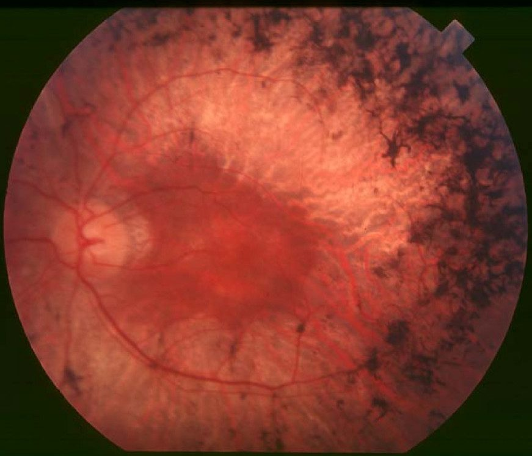

Información divulgativa. No sustituye la valoración de un profesional sanitario ni el consejo genético.
En pocas palabras
| Qué son | Enfermedades en las que mueren poco a poco las células de la retina que captan la luz |
| Frecuencia | La retinosis pigmentaria afecta a 1 de cada 3.000-4.000 personas |
| Genes | Más de 300 genes de retina; unos 100 para la retinosis pigmentaria |
| Herencia | Autosómica dominante, recesiva o ligada al X |
| Tratamiento génico | Voretigén neparvovec para las variantes en RPE65 |


La retina y sus células
La retina es la capa del fondo del ojo que convierte la luz en señales nerviosas. Tiene dos tipos de fotorreceptores: los bastones, que funcionan con poca luz y en la periferia del campo visual, y los conos, que dan la visión del color y del detalle en el centro. Mantenerlos vivos requiere cientos de proteínas distintas, y un fallo en cualquiera de ellas puede causar una distrofia hereditaria de retina.
Retinosis pigmentaria
Es la más frecuente. Primero mueren los bastones y después los conos:
- Ceguera nocturna: dificultad para ver de noche o en lugares oscuros, a menudo desde la infancia o la adolescencia.
- Visión en túnel: se va perdiendo el campo visual periférico. La persona tropieza con objetos o no ve a quien se le acerca por un lado.
- En fases avanzadas, se afecta la visión central.
En el fondo de ojo se ven unos depósitos de pigmento con forma de espículas óseas, que le dan nombre. Avanza a lo largo de décadas y la velocidad depende mucho del gen.
Puede heredarse de forma autosómica dominante (en torno al 30-40 % de los casos)3, recesiva (50-60 %) o ligada al X (5-15 %, sobre todo por el gen RPGR, con hombres más afectados). Una cuarta parte de los casos se asocia a otros síntomas, como en el síndrome de Usher, que combina retinosis y sordera.
Amaurosis congénita de Leber
Es la forma más grave y precoz: el bebé nace con una visión muy baja o la pierde en los primeros meses, con movimientos oscilantes de los ojos (nistagmo) y poca reacción de las pupilas. Se conocen unos 25 genes, como CEP290, GUCY2D y RPE65. Casi siempre es autosómica recesiva. No hay que confundirla con la neuropatía óptica hereditaria de Leber, que es una enfermedad del nervio óptico causada por cambios en el ADN mitocondrial.
La primera terapia génica (2017)
El gen RPE65 fabrica una enzima necesaria para regenerar el pigmento visual. En las personas con dos variantes en este gen, los fotorreceptores sobreviven un tiempo pero no funcionan. Un virus adenoasociado inyectado bajo la retina lleva una copia sana del gen.
El fármaco, llamado voretigén neparvovec, se aprobó en Estados Unidos en 2017 y en Europa en 20182: fue la primera terapia génica para una enfermedad hereditaria en Estados Unidos. Mejora la visión con poca luz, aunque solo sirve para este gen, que causa una pequeña parte de los casos, y cuando aún quedan células vivas.
Hay ensayos en marcha para otros genes, como RPGR y CEP290, incluida una edición genética con CRISPR dentro del ojo, además de terapias independientes del gen, como la optogenética o las retinas artificiales.
Diagnóstico y seguimiento
- Exploración del fondo de ojo, campo visual, tomografía de coherencia óptica y electrorretinograma, que mide la respuesta eléctrica de la retina.
- Estudio genético con un panel de genes de retina: encuentra la causa en un 60-70 % de los casos3. Saber el gen permite dar un pronóstico, calcular el riesgo para la familia y saber si hay algún ensayo disponible.
- Ayudas para baja visión, protección frente a la luz intensa y, cuando la visión cae mucho, rehabilitación y servicios de la ONCE.
Qué preguntar en consulta
Preguntas que puedes llevar apuntadas. No todas tendrán respuesta el primer día, y tu equipo puede añadir otras.
- ¿Qué gen está alterado y eso cambia el pronóstico o el tratamiento?
- ¿Soy candidato a terapia génica o a algún ensayo clínico?
- ¿Qué ayudas de baja visión y qué rehabilitación visual tengo a mi alcance?
- ¿Puedo seguir conduciendo y cada cuánto debo revisarme?
- ¿Cómo se hereda en mi familia y qué riesgo tienen mis hijos?
Dónde informarse
- FARPE, Federación de Asociaciones de Distrofias Hereditarias de Retina de España
- ONCE: servicios para personas con ceguera o baja visión
- Orphanet: retinosis pigmentaria
Ver también: Terapia génica, Paneles, exoma y genoma y Patrones de herencia.
Fuentes
- Hartong DT, Berson EL, Dryja TP. Retinitis pigmentosa. Lancet. 2006;368(9549):1795-1809. doi:10.1016/S0140-6736(06)69740-7
- Russell S, Bennett J, Wellman JA, et al. Efficacy and safety of voretigene neparvovec (AAV2-hRPE65v2) in patients with RPE65-mediated inherited retinal dystrophy: a randomised, controlled, open-label, phase 3 trial. Lancet. 2017;390(10097):849-860. doi:10.1016/S0140-6736(17)31868-8
- Verbakel SK, van Huet RAC, Boon CJF, et al. Non-syndromic retinitis pigmentosa. Prog Retin Eye Res. 2018;66:157-186. doi:10.1016/j.preteyeres.2018.03.005